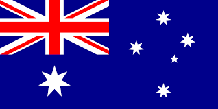
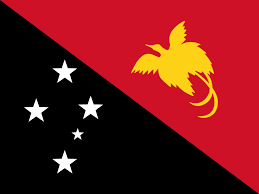

day 5: Summary of Our Journey Through Oceania

Recap of Our Adventure
Over the past few days, we've traveled through the diverse and beautiful regions of Oceania. We started in Australasia, exploring the vibrant cities and famous landmarks of Australia and New Zealand. We then ventured into Melanesia, where we experienced the rich cultural traditions and stunning natural beauty of countries like Fiji and Papua New Guinea. Finally, we discovered the small but enchanting islands of Micronesia, known for their unique marine life and historic sites.
Highlights of Our Journey
- Australasia: The Great Barrier Reef, Sydney Opera House, and friendly wildlife.
- Melanesia: Coral reefs of Fiji, volcanoes of Vanuatu, and traditional dances.
- Micronesia: Ancient city of Nan Madol, Chuuk Lagoon diving spots, and Rock Islands of Palau.
Celebrating Oceania's Diversity
Oceania is a region rich in diversity, with each area offering its own unique cultures, languages, and landscapes. Whether it's the bustling cities of Australasia, the cultural villages of Melanesia, or the tranquil islands of Micronesia, there's something special to discover in every corner of Oceania.
Flags of Oceania
Here are some of the flags of the countries we explored:
| Country | Flag | Capital City |
|---|---|---|
| Australia |  | Canberra |
| New Zealand |  |
Wellington |
| Fiji |  |
Suva |
| Papua New Guinea |  | Port Moresby |
| Federated States of Micronesia |  |
Palikir |
| Palau |  |
Ngerulmud |
Did you know?
üåè Australia is the only country that is also a continent, home to unique wildlife like kangaroos and koalas.
üåã New Zealand is known for its active geothermal areas, including the famous Rotorua geysers.
ü™∏ Fiji is considered the "Soft Coral Capital of the World" due to its vibrant underwater life.
üèîÔ∏è Papua New Guinea has one of the highest rates of linguistic diversity, with over 800 languages spoken.
üå∫ The Federated States of Micronesia consists of four states spread across the Western Pacific Ocean.
üõ∂ Palau is known for its pristine marine environment, making it a top destination for diving enthusiasts.